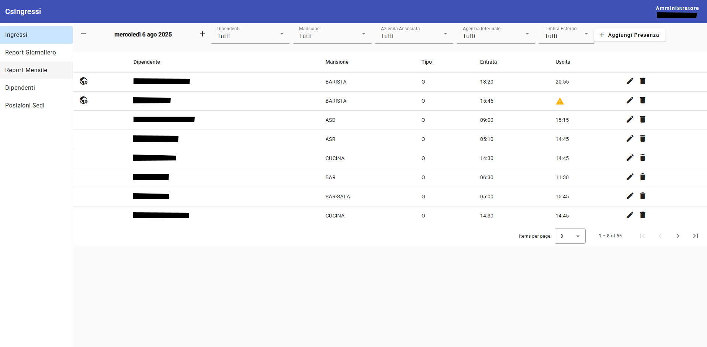

Gestione Presenze e Timbrature con QR-Code
Questo progetto è un gestionale web completo progettato per semplificare e automatizzare il processo di rilevazione delle presenze e delle timbrature dei dipendenti. Sfruttando la tecnologia dei codici QR, offre una soluzione moderna e efficiente per il controllo degli accessi e la rendicontazione delle ore lavorate.
Ideale per aziende di ogni dimensione, cantieri, uffici e organizzatori di eventi, il sistema garantisce precisione e affidabilità, riducendo gli errori manuali e ottimizzando la gestione delle risorse umane. La piattaforma è responsive e accessibile da qualsiasi dispositivo, offrendo flessibilità e controllo totale.
Tecnologie utilizzate: Angular per il frontend, Node.js per il backend e SQL Server per la gestione del database.
Funzionalità Principali
- **Rilevazione presenze tramite scansione di QR Code:** Registrazione rapida e sicura dell'entrata e dell'uscita dei dipendenti.
- **Dashboard personalizzabile:** Per monitorare in tempo reale le presenze dei dipendenti, con filtri per data, dipendente, mansione, azienda e agenzia interinale.
- **Gestione del personale:** Strumenti per aggiungere, modificare e gestire i dati dei dipendenti e le loro mansioni.
- **Possibilità di aggiungere manualmente le presenze e di modificare quelle esistenti.**